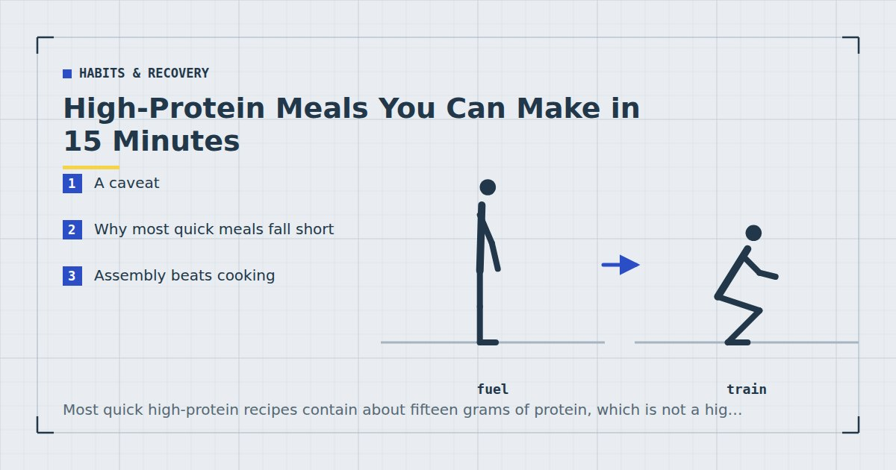

Habits & Recovery
High-Protein Meals You Can Make in 15 Minutes
Most quick high-protein recipes contain about fifteen grams of protein, which is not a high-protein meal. These reach twenty-five to forty, and most involve no cooking at all.

I am not a dietitian. These are practical suggestions for reaching a protein target, not dietary advice, and the figures are approximations that vary by product. If you have a medical condition affected by diet, food allergies, or are pregnant, speak to your GP or a registered dietitian.
A caveat
These meals are built around protein because that is the nutrient most commonly under-consumed by people who train — the target range and the evidence behind it are in how much protein you need for home workouts.
They are not complete nutritional advice. A diet built entirely from the list below would be short on vegetables and fibre, and that matters. Treat these as protein anchors to build meals around rather than as meals in themselves.
Why most quick meals fall short
Search for high-protein quick recipes and most results contain fifteen to eighteen grams. That is not a high-protein meal; it is an ordinary meal.
To reach a target of roughly 1.4 to 1.6 grams per kilogram of bodyweight across three meals, most people need 25 to 40 grams per meal. Everything below is built to that figure.
The gap usually comes from treating protein as a garnish. A salad with a boiled egg on top has about six grams of protein in the egg. Three eggs, or a tin of tuna, changes the meal entirely.
Assembly beats cooking
The single most useful reframe here. Cooking takes time; assembling does not.
The highest-protein foods available to most people — Greek yoghurt, cottage cheese, tinned fish, tinned pulses, milk, pre-cooked chicken, eggs — require either no cooking or under five minutes. A meal built from two or three of them is faster than anything involving a recipe.
This matters for adherence more than it looks. A protein target reached by cooking is a target you hit on good days, and a target reached by opening a tin is one you hit on bad ones.
Breakfast, where the gap is
Almost universally the meal where people lose the number. Toast, cereal, fruit and coffee is a breakfast with perhaps eight grams of protein in it, and fixing breakfast alone moves most people into range.
Greek yoghurt with nuts and fruit — ~25 g, two minutes. 200g of Greek yoghurt is about 20 grams; a handful of nuts adds a few more. The single easiest fix on this page.
Three-egg scramble on toast — ~26 g, six minutes. Three eggs is about 19 grams, the toast adds a few, and cheese or beans push it higher.
Cottage cheese on toast with an egg — ~30 g, five minutes. Unfashionable and extremely efficient.
Overnight oats with milk and yoghurt — ~25 g, two minutes the night before. Oats with 300ml milk and a spoon of yoghurt. Made in advance, so the morning cost is zero.
A pint of milk alongside whatever you already eat — ~17 g, no time at all. Inelegant and effective if you tolerate dairy.
Lunch and dinner
Tuna and beans — ~40 g, three minutes. A tin of tuna and a tin of cannellini or butter beans, drained, with olive oil, lemon and whatever herbs you have. Cold, no cooking, and among the highest-protein meals you can assemble.
Chicken and couscous — ~45 g, ten minutes. Pre-cooked chicken over couscous made with boiling water. Add frozen peas or spinach for something green.
Omelette with cheese and whatever is in the fridge — ~30 g, eight minutes. Three eggs plus 30g cheese.
Lentil and yoghurt bowl — ~30 g, five minutes. A tin of lentils warmed through, topped with Greek yoghurt, lemon and cumin.
Salmon and rice — ~35 g, ten minutes. A tin of salmon over microwave rice with soy sauce and spring onion.
Cottage cheese and smoked mackerel — ~35 g, three minutes. No cooking whatsoever.
A salad with an egg on it contains six grams of protein. A salad with three eggs on it is a different meal.
Vegetarian and vegan options
Reaching the target without meat or fish is straightforward but requires more deliberate choices, because plant sources are generally less protein-dense per calorie.
Tofu scramble with beans — ~30 g, eight minutes. 150g firm tofu is about 18 grams; half a tin of beans adds ten more.
Lentil and chickpea bowl — ~30 g, five minutes. A tin of each, with tahini, lemon and whatever vegetables are to hand.
Greek yoghurt and nuts — ~25 g for vegetarians. Skyr is higher again if you can get it.
Edamame as a side — ~11 g per 100g. Frozen, boiled for three minutes, and one of the most protein-dense plant foods available.
Soy milk rather than other plant milks if you use them — roughly 3g per 100ml versus under 1g for most alternatives, which adds up over a day.
Vegans in particular benefit from including soy foods and pulses at most meals, since variety across the day matters more when individual sources are less complete.
If you are eating less overall
One situation where these meals matter more than usual: when you are in a calorie deficit. Protein appears to matter more for preserving muscle when energy intake is restricted, which is the argument set out in the realistic weight-loss plan — and it is the reason that plan treats training as muscle insurance rather than as the mechanism of weight loss.
Practically, that means the protein anchor at each meal becomes the fixed part and everything else flexes around it. Cutting portions across the board tends to cut protein along with everything else, which is exactly the wrong thing to lose.
It also means the satiety side matters. Protein is generally the most satiating macronutrient, so a breakfast of Greek yoghurt leaves most people considerably less hungry at eleven than the same calories from toast. That is a practical benefit rather than a metabolic trick, and it makes the deficit easier to hold.
The training side of that period is worth adjusting too — reduced energy intake means reduced recovery capacity, which is one of the signals covered in deload weeks for home training.
What to prepare in advance
Not full meal prep, which many people find they do not sustain. Just three things that remove friction.
Boil six eggs at the start of the week. They keep for a week refrigerated and turn any meal into a higher-protein one in thirty seconds.
Cook a batch of chicken or lentils. Two or three portions, refrigerated. This is the difference between assembling dinner and cooking it.
Keep tins in. Tuna, salmon, beans, lentils, chickpeas. Between them they cover the meals above, they keep indefinitely, and they cost little. This is the most useful thing on this page for anyone who eats badly when tired.
Adult activity guidance says nothing about diet,1 and no eating pattern substitutes for training. But protein intake supports muscle gains alongside resistance training,2 and it is the nutritional variable with the clearest relevance to what you are doing in your living room three times a week.
Where to go next
For the target and the evidence behind it, see how much protein you need. For the timing question, see what to eat before and after a home workout.
Frequently asked questions
What is a high-protein meal?
For someone training and aiming at roughly 1.4 to 1.6 grams per kilogram of bodyweight daily, a high-protein meal contains 25 to 40 grams. Most recipes marketed as high-protein contain fifteen to eighteen, which is an ordinary meal.
What is the quickest high-protein meal?
Greek yoghurt with nuts, at about 25 grams in two minutes with no cooking. For a full meal, a tin of tuna with a tin of beans reaches roughly 40 grams in three minutes.
Why is breakfast the hardest meal for protein?
Because typical breakfasts — toast, cereal, fruit — contain very little. A standard breakfast might have eight grams, and that missing 25 grams is frequently the entire daily gap. Fixing breakfast alone moves most people into range.
How can vegetarians and vegans hit protein targets quickly?
Tofu, tinned lentils and chickpeas, edamame, Greek yoghurt for vegetarians, and soy milk rather than other plant milks. Plant sources are generally less protein-dense, so including one at most meals matters more than it does with meat or fish.
Do I need to meal prep to eat enough protein?
No. Assembly beats cooking — the highest-protein foods available need either no cooking or under five minutes. Boiling six eggs at the start of the week and keeping tins of fish and pulses in covers most of it.
Sources and further reading
- World Health Organization. WHO Guidelines on Physical Activity and Sedentary Behaviour. 2020.
- Morton RW, Murphy KT, McKellar SR, et al. “A systematic review, meta-analysis and meta-regression of the effect of protein supplementation on resistance training-induced gains in muscle mass and strength in healthy adults.” British Journal of Sports Medicine, 2018;52(6):376–384. PubMed.
- Nunes EA, Colenso-Semple L, McKellar SR, et al. “Systematic review and meta-analysis of protein intake to support muscle mass and function in healthy adults.” Journal of Cachexia, Sarcopenia and Muscle, 2022;13(2):795–810. PubMed.
- NHS. Physical activity guidelines for adults aged 19 to 64.
Comments
Comments are not enabled yet. Add a hosted comment embed (Disqus, Commento, Giscus) inside this container when you are ready.